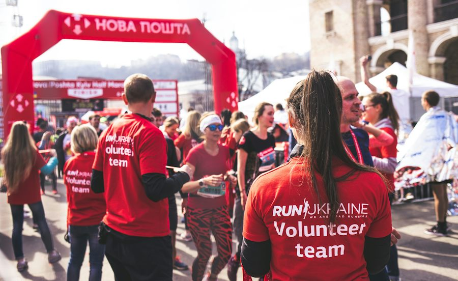

Ficha de sesión · S05 · solo docente
| § | Bloque | Min |
|---|---|---|
| 1 | Warm-up · What do you track? · Three messages: -ing or to | 4 |
| 2 | Vocabulary · Describe It, Don't Say It | 8 |
| 3 | Grammar · verb + -ing / to · Same Fact, Three Frames | 12 |
| 4 | Reading · Three profiles · Helps or gets in the way? | 7 |
| 5 | Speaking · Prepare 2 · The Wall 8 · Twist 2 · Six sentences 5 · 12 preguntas 4 | 21 |
| 6 | Wrap-up · back to minute 1 + exit | 8 |
| Total | 60 |
Warm-up · What do you track?
Tap one or more. Then say ONE sentence: “I track my…” or “I don't track anything.”
Teacher notes · §1 Warm-up
Pedagógica
- Dos pasos. (1) El alumno TOCA lo que mide (pasos, sueño, dinero, tiempo, nada) y dice UNA oración: «I track my…» o «I don't track anything». Es hablar de sí mismo con un dato inocuo; si prefiere no decirlo, «nothing» es válido. (2) Tres mensajes de personas FICTICIAS: el alumno decide qué oración usa la forma correcta del verbo (-ing o to) y la DICE. Los distractores son errores típicos del español: «enjoy to track», «decided stopping», «forgot to charging». El mensaje se clava en +ING o +TO solo después de «I said it ✓».
- Máx. 4 min. 30 s en silencio y luego habla sin leer. No expliques todavía: modela «enjoy tracking» y «decided to stop» con pausa y señala las dos columnas. Seguro y Mild: sin datos sensibles.
- Grupo: cada persona toma un mensaje. 1:1: pide una segunda respuesta al mensaje 3 con otro verbo («She wants to charge it»).
Engagement
- Minuto 1: dicen qué miden. Cierre en voz alta: «Today I can say what I enjoy tracking and what I decided to stop.»
- Pregunta puente: «¿En qué columna hay más verbos? ¿Cuál se usa más con ‘enjoy’?»
Crecimiento
- Anota qué mide cada quien: se compara con la defensa de §5.
- Si alguien dice «I enjoy to track», es la señal de la zona débil de hoy (se trabaja en §3).
Vocabulary · Describe it, don't say it

Tap a word: meaning, example, sound.
Words opened 0 / 10Five rounds. Describe the word. Do not say it or the red words.
Your partner guessed 0 / 51. Read the word. It is secret for your partner. 2. Start the timer: 45 seconds. 3. DESCRIBE it in English. No translation. Do not say the word or the red words. 4. Your partner (or teacher) guesses. 5. Tap “They guessed it ✓” or “Skip”.
Teacher notes · §2 Vocabulary
Pedagógica
- Describe It, Don't Say It (VOC-07, OCULTAMIENTO): el alumno describe una palabra sin decirla, sin traducirla y sin decir las palabras rojas. Cinco rondas de 45 s con smartwatch, days in a row, give up, can't stop y goal; punto por acierto de la pareja o del maestro (el que adivina, no el que describe, decide). El banco de palabras da las diez con significado y sonido antes de jugar, para que nadie describa sin conocer la palabra. «Skip» está permitido: no se castiga el silencio, se cuenta.
- Léxico: 10 ítems + 2 chunks (I can't stand + -ing, I decided to + verb) = 12. Definiciones SIN cláusulas de relativo. Máx. dos palabras sobre B1.1 [ESTIMACIÓN]: data y measure. En las pistas modelo se usa «something you use to…» (para + verbo): no es punto de lengua de hoy, solo andamio. Mic apagado: «guessed» solo con el cronómetro usado ≥6 s.
- Setup ≤2 min (regla 3-3-3). Cierra en voz alta: «My partner guessed N of 5 words.»
Engagement
- Rotación: VOC-07 abre por primera vez en el programa nuevo (OCULTAMIENTO); en S1 fue GRM-06, otra dinámica del mismo ID de familia en otro bloque temático. Escalación futura: palabras prohibidas más largas.
- Pregunta: «¿Qué palabra fue imposible de describir?»
Crecimiento
- Anota qué palabras no pudo describir: material para el repaso de S10.
- Las diez palabras reaparecen en los perfiles y en las objeciones.
Grammar · verb + -ing and verb + to
Two families of verbs. Three tricky verbs.
+ -ING
enjoy · can't stand · keep · give up · finish
I enjoy tracking my progress.+ TO
decide · want · need · hope · forget
He decided to stop measuring everything.1 · stop
He stopped checking. (the habit ended) · He stopped to check. (he paused to do it)
2 · remember / forget
I forgot to charge it. (I did not do it) · I remembered to charge it. (I did it)
3 · try
I tried to stop, but I couldn't. (effort) · I tried turning it off for a week. (experiment)
¿Qué es? Cuando dos verbos van juntos, el segundo cambia de forma: con enjoy, can't stand, keep, give up va en -ing; con decide, want, need, forget va con to.
¿Cómo se usa? I enjoy tracking my sleep. I decided to stop. Tres verbos cambian de significado: stop (dejar de / pararse para), remember / forget (acordarse de hacer / olvidar hacer) y try (intentar / probar).
¿Para qué hoy? Para decir qué disfrutas, qué decidiste y qué olvidaste, y para explicar cuándo medir ayuda.
Cuidado: en español se dice «disfruto de medir» o «decidí dejando», pero en inglés no: enjoy tracking, decided to stop.
-ING or TO? Then say a sentence about tracking.
Said 0 / 6
Read the situation. Pick the frame that fits. Say WHY.
Frames justified 0 / 31. Read the situation. 2. TAP the frame that fits. 3. TAP why it fits: what does the frame mean? 4. SAY: “I choose …, because …” and tap “I said why ✓”. You get the point only for the reason, not for the guess.
Teacher notes · §3 Grammar
Pedagógica
- UN solo punto de lengua: gerundio e infinitivo (verbo + -ing / verbo + to; stop, try, remember con dos sentidos). Explicación docente ≤5 min (el Recap está en pantalla). Máquina de verbos (mecánica corta, 3 min = 1/4 del bloque) + Same Fact, Three Frames (GRM-12, RANKING, meaningful): un mismo hecho dicho de tres formas; el alumno decide cuál corresponde Y POR QUÉ. Enseña uso, no forma: punto solo por la justificación dicha en voz alta, cero por acertar de suerte.
- Los tres hechos: Leo (stop + -ing: el hábito terminó), Tara (forgot to: no lo hizo) y Sam (try + -ing: experimento). Errores previstos: «enjoy to track», «decided stopping», «forgot charging» confundido con «forgot to charge». Límite de nivel: sin passive, sin relative clauses; las explicaciones de uso en pantalla evitan «who / that» de relativo.
- Cierra en voz alta: «I justified N of 3 frames.» Setup ≤2 min (regla 3-3-3).
Engagement
- Rotación: GRM-12 abre por primera vez en el programa nuevo (RANKING); S3 usó RANKING en el speaking (SPK-10): son dinámicas y bloques distintos. Escalación futura: S19 pide justificar con evidencia.
- Lleva el reloj: 3 min de máquina, 6 de marcos.
Crecimiento
- «Enjoy to track» es material del cierre.
- Anota 2 errores reales (sin nombre) durante §5.
Reading · Three profiles
Does the sentence show that tracking helps, or that it gets in the way?
Sorted 0 / 6One question about the three profiles.
Now you. SAY one sentence about any profile:
Teacher notes · §4 Reading
Pedagógica
- Insumo, no examen: tres perfiles FICTICIOS con su tablero (Iván mide todo, Julia mide solo el gasto, Beto dejó de medir), ≤60 palabras (máx. real ≈40), sin listening: el PDF define el input como tres perfiles. Cada tarjeta se puede ESCUCHAR. El tablero de barras es dibujo, no dato real. Después el alumno clasifica seis oraciones: «tracking HELPS» o «tracking GETS IN THE WAY». No es pregunta de detalle de opción múltiple (ADN 8-oct). UNA sola pregunta de idea general.
- Para cerrar, el alumno DICE una oración con verbo + -ing y otra con verbo + to sobre cualquier perfil: antesala de §5. Los tres perfiles se reutilizan en la defensa y en las seis oraciones: nada nuevo que aprender.
- En grupo: cada persona toma un perfil y lo cuenta a su pareja. En 1:1: el maestro elige el perfil.
Engagement
- La clasificación «helps / gets in the way» prepara las objeciones de §5: quien ya vio los dos lados responde mejor.
- Pregunta: «¿Con cuál perfil te identificas?»
Crecimiento
- Anota quién separa bien -ing y to sin ayuda.
- Los datos de las tarjetas se reutilizan en la misión.
Speaking · The objection wall

Defend one idea. Five objections come, one after another. Do not fall into Spanish or silence.
Idea · Reason · Example · Result. Say: verb + -ing · verb + to Done when: six sentences about two people (four with verb + -ing, two with verb + to) and one reason for when tracking helps.
Group: one student defends. The others bring the objections. Count how many are absorbed.
1:1: the teacher reads the objections. You answer each one in 20 seconds.
Your idea: “”
Silence first: 30 seconds to think. No notes of your own.
Five bricks. Answer each objection in 20 seconds.
Absorbed 0 / 5Press “Show the first objection”. Then use the timer: answer for at least 6 seconds to count it.
Open the twist. Does your answer change?
Describe two people. Tap each time you say a sentence.
12 questions · always 2 follow-ups

Teacher notes · §5 Speaking
Pedagógica
- The Objection Wall (SPK-09, ELIMINACIÓN): un alumno sostiene «medirlo todo mejora la vida» frente a cinco objeciones preparadas, una tras otra, sin descanso: 20 s para responder a cada una. Se cuenta cuántas absorbió sin caer al español ni al silencio (la pareja o el maestro decide con «Absorbed ✓» o «I fell»). «Absorbed» solo se habilita con el cronómetro usado ≥6 s. El que cae no se elimina de la clase: se cuenta y sigue (en ELIMINACIÓN lo que se elimina es el ladrillo, no al alumno).
- Giro (tarjeta): los datos de Iván mejoran cada semana, pero lleva tres meses sin disfrutar ninguna actividad: ¿cambia tu respuesta? Después viene la EVIDENCIA del PDF: describe a dos personas en seis oraciones con cuatro verbos + -ing y dos con verbo + to (uno con stop, try o remember) y defiende cuándo medir ayuda, con una razón. Cinco contadores que toca el alumno al decir cada oración. Marco Idea · Reason · Example · Result a la vista.
- 12 preguntas (todas con 2 follow-ups): elige 5 y registra 2 errores reales sin nombre. Rescate visible. Cierra con el resultado dicho en voz alta: «I absorbed N of 5 objections and I think tracking helps when…».
Engagement
- Anuncia el resultado: «Absorbed: N of 5. Mission complete!»
- Pregunta final: «¿Qué objeción fue la más difícil de absorber?»
Crecimiento
- S6 sube a la Mediación (Deepfakes): hoy practicaron resistir la presión de responder rápido.
- Registra los casos reales que mencionan: buen insumo para la venta («¿qué mides en tu planta?»).
Wrap-up · Better the second time
How did your session go?
Say two real sentences about you
Said 0✓ Success
↑ Upgrade
✎ Repair
↻ Next use
Use “I enjoy…ing” and “I decided to…” once in a real conversation this week.
60 seconds · 5 questions
Today I can…

You can say what you enjoy, decide and forget to do, and when tracking helps.
Homework: write six sentences about what you track or do not track: four with verb + -ing and two with verb + to. Next: Session 6.
Teacher notes · §6 Wrap-up
Pedagógica
- Máx. 2 aciertos y 3 correcciones de alto valor con los errores anotados en §5 (sin nombres). Resume cuántas objeciones absorbió cada quien y qué marco justificó mejor.
- Tarea: seis oraciones sobre lo que mide o no mide (cuatro con verbo + -ing y dos con verbo + to). Se revisa al inicio de S6.
Engagement
- Declaración final: «Today I can say what I enjoy, decide and forget to do.»
- Compara con §1: «Minute 1 you said what you track. Minute 50 you defended tracking against five objections.»
Crecimiento
- Registra: palabras adivinadas, verbos dichos, marcos justificados, perfiles clasificados, objeciones absorbidas, contadores de las seis oraciones.
- «Next session: Session 6, Deepfakes: Can We Trust What We See?» (Mediación: hay audio con acento indio que se graba antes.)